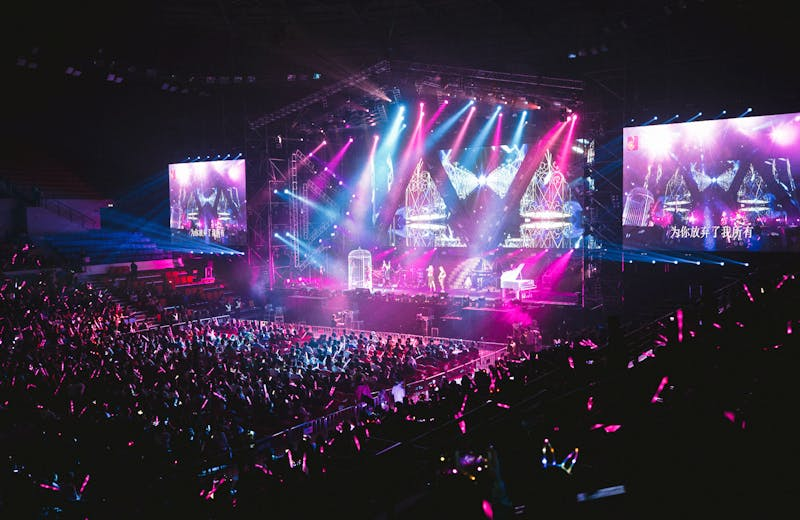
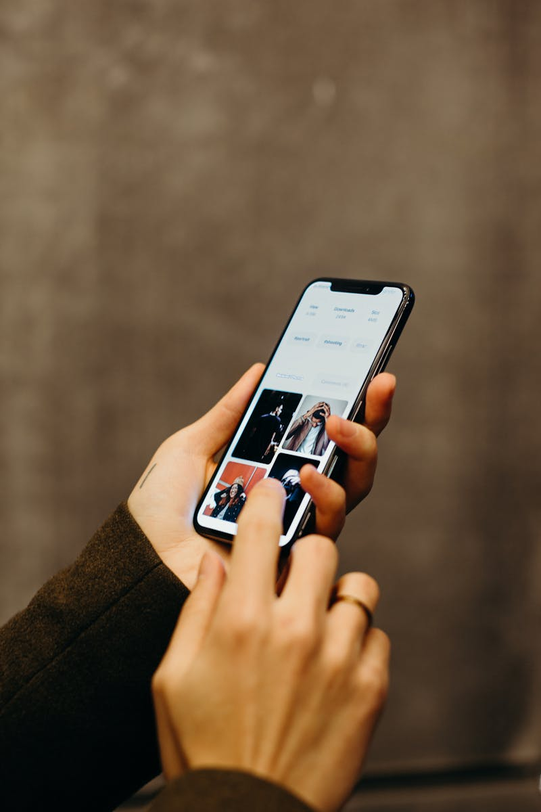
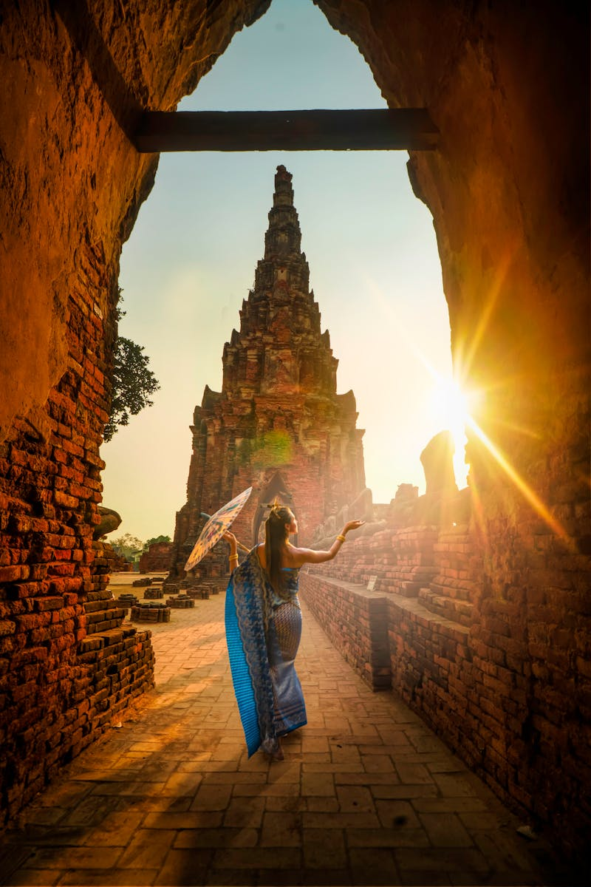
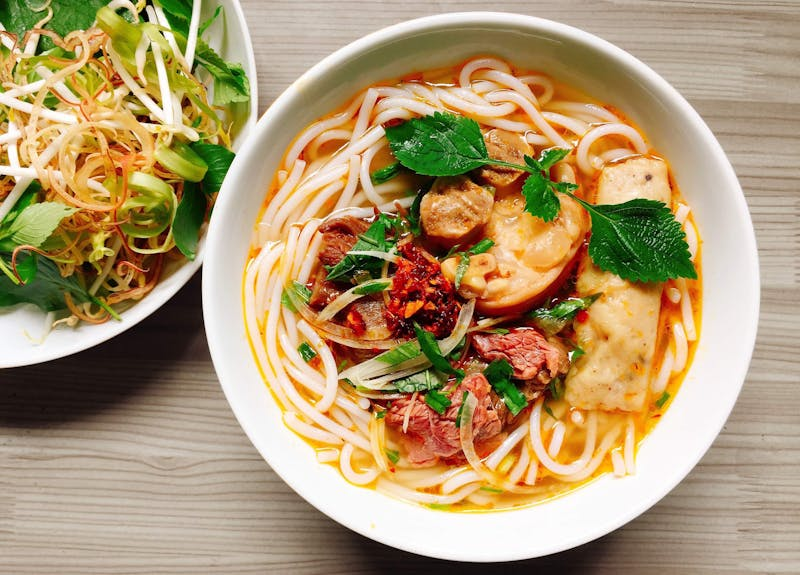
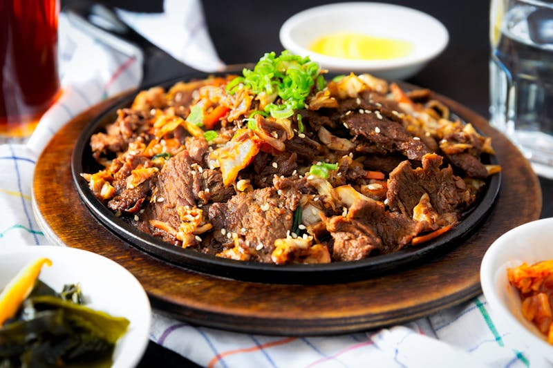
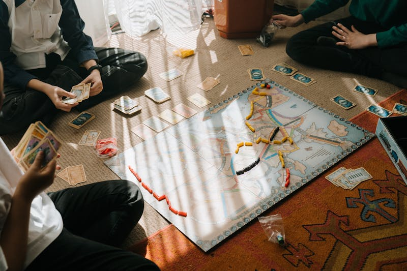
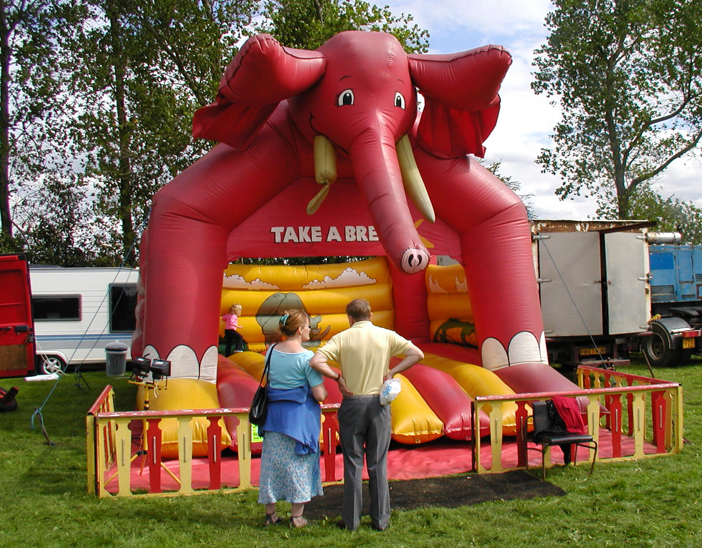
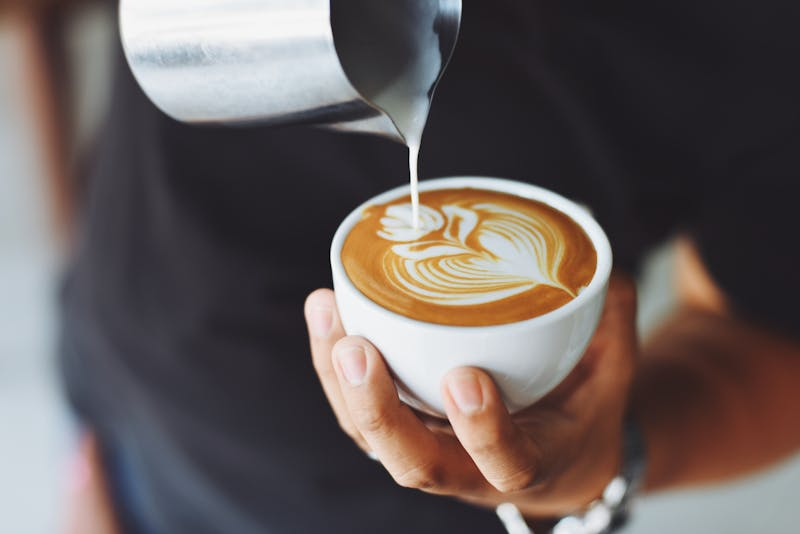

A
Pengenalan & Ringkasan
Cover, deck structure, executive summary, and the core program intent.
Festival Pantai
A nationwide beach festival concept built to feel like a premium destination campaign: celebratory, family-friendly, visually ownable, and rooted in Malaysian coastal culture.

A year-long route spanning Peninsular Malaysia, Sabah, and Sarawak.
Each stop is framed as a tourism weekend, not just a local activation.

00 Deck Flow
The proposal now opens with contents, summary, concept, and visitor journey before it moves into rollout, layouts, program components, communications, and delivery.
Cover, deck structure, executive summary, and the core program intent.
Creative direction, visitor journey, and destination atmosphere.
National map, 14-beach footprint, and the year-long route.
Site design, pavilion planning, utilities, and technical readiness.
Food, entertainment, family activities, competitions, and branding assets.
Media plan, strategic partners, stakeholder coordination, and closing.



02 Creative Concept
The TM reference deck works because it declares its concept early. This version now does the same: the festival should feel warm, celebratory, recognizably Malaysian, and visually ownable from the first glance.

Lead with beaches, travel desire, and place identity before operational detail.
Use batik, craft motifs, warm color accents, and hospitality cues to build a local signature.
Design the experience to evolve from family-friendly daytime programming into photogenic sunset and evening moments.
Keep the concept premium in presentation but practical enough for traders, families, and public-sector stakeholders.
03 Visitor Journey
This is the missing bridge between concept and logistics. Like the TM reference deck, it makes the visitor experience feel intentional instead of implied.
Reach the beach and immediately understand where the activation begins.
Encounter warm greetings, branded entry moments, and a clear festival center.
Move naturally through culture, food, handicrafts, and community commerce zones.
Join performances, games, sports, competitions, and family-friendly programming.
Leave with photos, purchases, memories, and a reason to recommend the next stop.


05 Layout
The venue needs a visible center of gravity, better crowd flow, and enough design language to photograph well throughout the day and night.

The anchor for cultural shows, music acts, and evening spectacles.
Branded hospitality space for information, protocol, sponsors, and official guests.
Dedicated zones for craft sellers, small traders, and tourism stakeholders.
Organized 10' x 10' vendor footprints that avoid visual chaos and improve crowd movement.
Photo arches, branded letters, and batik-driven decor that generate social content naturally.
Picnic tables, shaded lounges, and softer edges for parents with children.
05 Technical
This part of the proposal needs to reassure stakeholders that the experience is not just attractive, but properly supported on the ground.
A branded pavilion with information counter, facade treatment, and adjoining modular guest lounge for protocol, sponsors, and media engagement.
Uniform facades and zone planning keep the proposal from feeling visually messy while giving local sellers enough presence.
Power, sanitation, RORO bins, 120L waste bins, and practical furniture selections are built into the operating model from the start.


06 Program
The commercial program should combine local taste, affordability, and sponsor friendliness. This is where the deck starts to feel useful for both community and brand partners.



Each festival stop foregrounds recognizable Malaysian food culture with vendor setups designed for comfort, cleanliness, and visual appeal.
A dedicated branded area can feature subsidized or value-led products from partners such as MYDIN, Gardenia, Farm Fresh, and other participating brands.
06 Program
This section now reads like a line-up instead of a wall of text. That matters because entertainment is one of the strongest emotional drivers in the entire proposal.
Celebrate Malaysia’s multicultural identity with curated main-stage performances across the festival calendar.

Create a stronger golden-hour to night-time transition with performance moments people will stay for and film.

Smaller live acts activate circulation zones and keep the beachfront lively beyond the main stage timetable.
06 Program
These programs widen the audience beyond passive spectators and help each festival feel active from morning until night.

A playful route where movement and food culture meet, turning participation into a signature content moment.
Batik painting, songket weaving, wood carving, and live-making sessions create deeper cultural legitimacy.

Tug of war, sack race, beach volleyball, soccer, and relay formats bring easy family participation to every stop.
06 Program
Family audiences need more than one generic play area. Breaking the offer into clear experiences makes the proposal feel better considered.

Congkak, gasing, wau, face painting, balloon art, and sand castle competitions reconnect families with familiar kampung energy.

A visible, safe children’s area lets parents enjoy food, shopping, and performances with less friction.

Soft seating, comfort zones, and daytime activity pacing keep the festival welcoming to multigenerational visitors.
06 Program
These formats are easy to brand, easy to shoot, and easy to make local. That gives the proposal better commercial flexibility.

Home cooks compete with traditional recipes using sponsor-supported ingredients from brands such as Saji, Adabi, Mak Siti, and MYDIN.

A celebration of local coffee talent that bridges kopitiam familiarity and contemporary coffee culture.
Ideal for brands such as ZUS Coffee, Alicafe, and OldTown White Coffee to create a recharge zone with high dwell time.
07 Value Add
Like the reference deck's value-add section, this slide shows the extra touches that make the festival more memorable, more photogenic, and easier to amplify.
Roaming meet-and-greets, stage appearances, and family photo opportunities.
VM2026 letter signs, neon palms, welcome arches, batik walls, and themed backdrops.
Canopies, bunting, picnic setups, and festival dressing that feels unmistakably Malaysian.


08 Communications
The deck now frames promotion as a multi-channel system instead of a short bullet list, which makes the media plan easier to defend.
Live radio activation at each stop creates familiarity, legitimacy, and broad national reach.
Venue dressing, surrounding-area placements, and route visibility keep awareness strong on the ground.
Facebook, X, TikTok, YouTube, and live content support both anticipation and real-time amplification.
Travel, food, and lifestyle creators help every stop produce fresh, locally relevant social proof.

10 Strategic Partners
This version separates sponsors into readable clusters so the commercial logic is easier to absorb quickly.

This redesigned deck presents the proposal with stronger hierarchy, better atmosphere, and a clearer sense of tourism ambition. It now reads like a serious pitch, not a template slideshow.